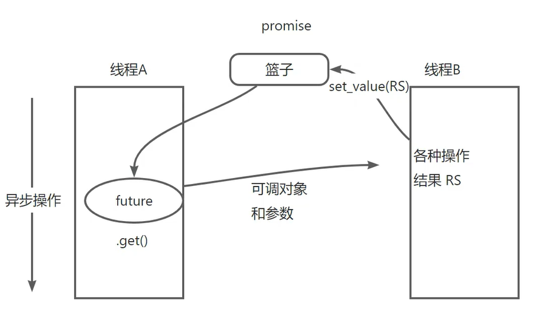

11 异步编程
异步编程
多线程本身就是异步任务，但异步编程不一定是多线程（比如NodeJS依靠单线程+事件队列）。并且
什么是异步编程
异步编程是一种范式，允许程序在等待某些操作完成的时候去做别的任务，而不是一直阻塞等待。在耗时操作完成时，可以发出通知。
比如：服务器在读取某个已连接socket时，如果该socket的数据还未准备好，此线程会一直阻塞，直到数据准备好，这会造成CPU资源的浪费，如果使用了异步编程，则此线程就可以在等待数据时先去做别的操作。当然非阻塞I/O也能做到这点，但是非阻塞I/O最后还是会有个同步操作。
std::future
std::future是一个模板类，用于表示一个异步操作的结果，它提供一种机制，允许用户在未来的某个时刻获取异步操作的结果。该类通常不是主动创建，而是由std::async, std::packaged_task或std::promise返回
std::future类应该是C++11异步任务里最重要的类了，解决了std::thread这种通过多线程实现异步的方法的一个缺陷（没返回值，即外界没有同步获取异步任务结果的能力）
常用的成员方法有以下4种：
get()：有返回值，一直阻塞直到异步任务结束。该方法只能被调用一次wait()：无返回值，一直阻塞直到异步任务结束，然后可以用get()获取结果wait_for(std::chrono::duration)：返回一个std::fututre_status变量wait_until(std::chrono::time_point)：返回一个std::fututre_status变量
1 | enum class future_status { |
要实现超时自动结束，除了用条件变量，还可以用
std::future的wait_for()
std::asnyc
std::async()是一个模板函数，用于启动一个异步任务，并返回一个std::future对象，代表异步操作的结果。可以让任务在新线程中运行，也可让任务在调用get()或wait()时在当前线程中运行
用法：
1 | template< class F, class... Args > |
policy的取值：
std::lauch::async：单独开启一个线程执行异步任务std::lauch::deffered：启动时不会立即执行函数，而是在首次调用std::future::get()时才在此线程执行- 缺省：由编译器和系统资源决定，不确定
代码示例：
1 |
|
std::promise
std::promise是用于设置异步结果的一个模板类，允许我们在一个线程中设置值，然后在另一个线程中通过std::future对象检索这些值。它通常与std::async, std::packaged_task或std::thread结合使用，以在异步任务中传递结果
一个
std::promise对象可以创建一个或多个std::future对象，用来承载std::promise对象所保存的结果值。只有当set_value()或set_exception()被调用，这些结果值才能被std::future的get()获取
promise可以看成2个线程之间传递信息的一个“篮子”，要往篮子里放东西时，必须使用set_value()，要从篮子里取东西时，必须调用get()
用法示例：
1 | int main() |
成员函数
get_future()：获得一个std::future对象，与此std::promise相关联set_value(T value)set_exception(std::exception_ptr p)
注意：
std::promise不能值传递，必须用指针或者std::move()移动语义- 确保std::promise的生命周期长于它返回的
std::future
std::packaged_task
std::packaged_task是一个模板类，主要用于将一个可调用对象（函数、lamda、函数对象…）包装起来，以便异步的执行并且能够返回其结果。通常与std::future和std::thread一起使用
创建一个
std::packaged_task对象并不会立即启动一个异步任务，只是会进行封装
使用流程：
- 创建一个
std::packaged_task对象 - 通过
get_future获得一个std::future对象 - 通过
operator()或std::thread来执行任务。注意，这里的std::packaged_task必须用std::move()传递，不允许复制 - 用
std::future的get()获取结果
使用实例：
1 | int main() |
1 | int main() |